Consultor em Dados, Sistemas e Análises de Políticas Públicas Educacionais
Especialista em transformar informações administrativas em instrumentos de gestão: construo plataformas analíticas, dashboards e pipelines que apoiam secretarias de educação e organismos internacionais na tomada de decisão baseada em evidências.
Atualmente atua em três frentes — FGV (SED Sergipe), BID (operação de inclusão educacional em Joinville) e Secretaria Municipal de Joinville — com o seguinte escopo de abrangência:
Graduado em Relações Internacionais e mestre em Estudos Estratégicos Internacionais, ambos pela Universidade Federal do Rio Grande do Sul (UFRGS). Especialização em Data Science and Analytics pela USP/ESALQ.
Atuação Atual
Consultor da Unidade de Migração (SCL/MIG) do Inter-American Development Bank (BID), apoiando o componente de inclusão educacional de migrantes na operação "Educação que Transforma" (Joinville/SC). Conduzo diagnósticos técnicos, análises quantitativas e qualitativas e formulação de recomendações baseadas em evidências.
Coordenador de Apoio Estratégico da Secretaria Municipal de Educação de Joinville, apoiando o Secretário no monitoramento de iniciativas prioritárias, elaboração de estudos técnicos e liderança de projetos estratégicos.
Consultor de Dados e Sistemas na Fundação Getulio Vargas (FGV), apoiando a Secretaria de Estado da Educação de Sergipe na estruturação de diagnósticos, sistemas de monitoramento e análises aplicadas à aprendizagem e ao fluxo escolar.
Escopo de Atuação
Experiência em âmbito municipal (São Luís/MA, Joinville/SC), estadual (Sergipe, Mato Grosso do Sul) e em cooperação com organismos internacionais: BID, ABC, AFD e CAF.
Competências
Competências Técnicas
Ciência de Dados
Python (Pandas, NumPy)
Análise Estatística
Modelagem de Dados
Indicadores de Risco
Engenharia de Dados
Pipelines de ETL
SQL / PostgreSQL
Integração de Múltiplas Fontes
Visualização
Power BI
Looker Studio
Chart.js / Leaflet.js
Desenvolvimento Web
Google Apps Script
HTML / CSS / JavaScript
Django / Node.js
Engenharia de IA
Agentes de IA
Construção de itens a partir de Matriz de Referência
Integração de LLMs
Domínios de Conhecimento
Sistemas Educacionais
SAEB / IDEB
Censo Escolar (INEP)
Monitoramento da Trajetória do Estudante
Educação Inclusiva
Monitoramento de Estudantes Imigrantes
Indicadores de Equidade
Programas de Recomposição
Análise Governamental
Governança Multinível
Cooperação Internacional (ABC, AFD, CAF, BID)
Planejamento Estratégico & OKRs
Projetos
01 — Plataforma de Indicadores de Risco Educacional
A SED Sergipe necessitava de uma abordagem sistemática para identificar escolas e estudantes em risco em múltiplas dimensões (abandono, reprovação, frequência, desempenho). O desafio era integrar dados de múltiplas fontes: sistema estadual, SAEB, SAESE, Plurall e INSE.
Solução Desenvolvida
Plataforma integrada em Python que processa ~597 MB de registros e gera indicadores compostos por escola. Pipeline estruturado de ETL: (1) extração de arquivos CSV/Excel de múltiplos sistemas com tratamento de codificação; (2) limpeza e padronização — normalização de códigos INEP, nomes de escolas e séries; (3) cálculo de indicadores — percentuais de risco de abandono, reprovação, frequência, notas, distorção idade-série e participação no Pé de Meia por escola; (4) classificação em níveis Baixo, Médio, Alto e Não Registrado; (5) cruzamento com SAEB 2023, SAESE 2024 e Plurall; (6) geração de planilha consolidada com dicionário de dados.
A plataforma permitiu à Secretaria identificar objetivamente as escolas com maior concentração de estudantes em risco, direcionando o acompanhamento pedagógico às 10 DREs. Os indicadores foram utilizados por gestores para priorização de recursos e definição de estratégias de intervenção.
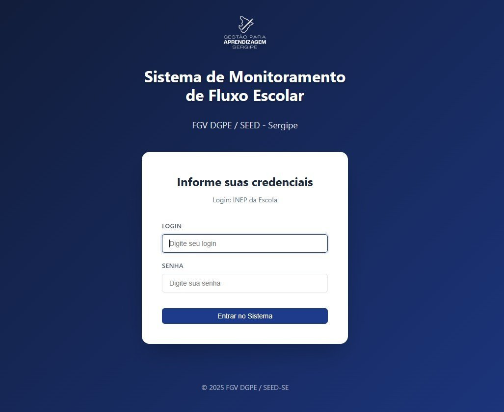
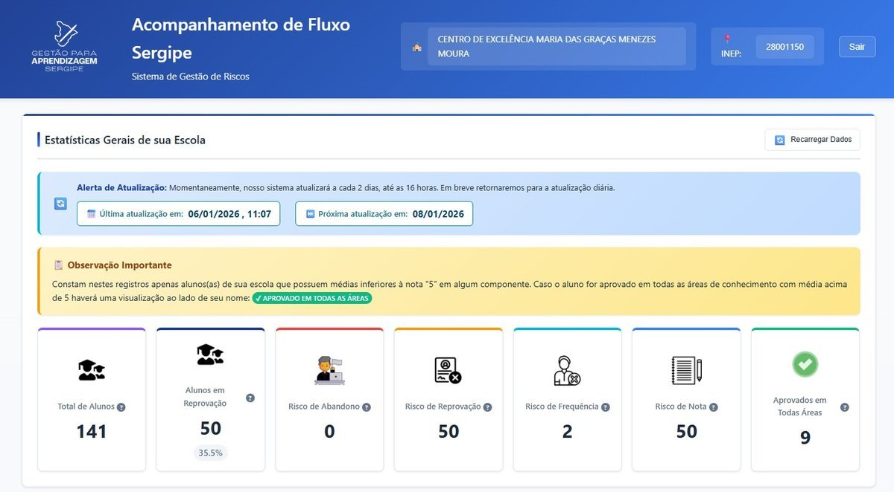
Python · Pandas · ETL · SAEB · Looker Studio
02 — Painel de Monitoramento de Estudantes Imigrantes
Joinville atende 3.923 alunos imigrantes de 47 nacionalidades em 170 escolas. A administração necessitava de um instrumento para mapear a população, compreender distribuição geográfica e escolar, acompanhar desempenho e subsidiar políticas de acolhimento.
Solução Desenvolvida
Sistema em duas camadas. Pipeline de dados (Python): processamento de 6 anos de registros (2021–2026), identificação de imigrantes por nacionalidade (incluindo inferência pela nacionalidade dos pais), deduplicação por código de pessoa e geração de 18+ CSVs analíticos. Aplicação web: mapa interativo Leaflet.js com distribuição em 170 escolas e coordenadas geográficas; dashboard com 10+ gráficos (nacionalidade, gênero, curso, turno, etapa, tempo na rede); integração com Innovamat (278 participantes imigrantes); geração automatizada de relatórios PDF por escola; acompanhamento da evolução de matrículas em seis anos.
O painel tornou-se ferramenta central para políticas de acolhimento e inclusão. Revelou padrões importantes — predominância de venezuelanos (2.965) e haitianos (259) — e possibilitou monitoramento da evolução de matrículas em seis anos. 3.239 estudantes hispanófonos identificados, viabilizando programas direcionados de apoio linguístico.
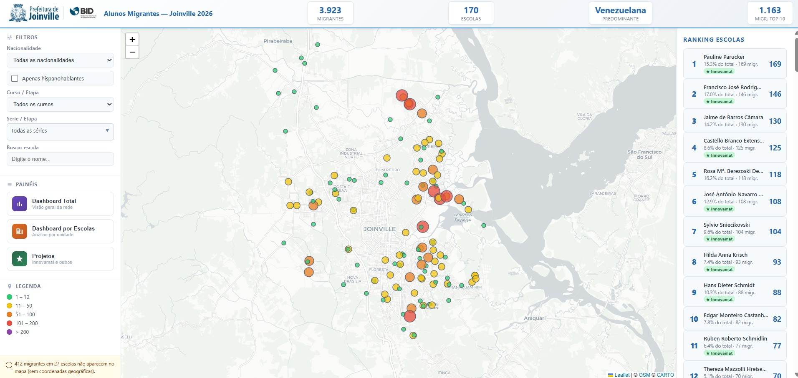
Python · Google Apps Script · Leaflet.js · Chart.js
03 — Sistema de Acompanhamento de Dados GA/SE
A Gerência de Avaliação da SED Sergipe necessitava de um sistema integrado para acompanhar movimentação (abandonos, transferências, evasões), reprovação por componente curricular e frequência escolar. Dados na API da SED, mas exigiam consolidação e painel web com login.
Solução Desenvolvida
Painel web com extração via API da SED, pipeline de tratamento em Python e três módulos. Movimentação: acompanhamento de abandonos, transferências (internas e externas), evasões e cancelamentos, com histórico temporal e detalhamento por escola. Reprovação: análise de rendimento, reprovação por componente curricular e área de conhecimento, distribuição por tipo (média, faltas, falta de nota) e ranking de escolas. Frequência: monitoramento de infrequência com distribuição por faixa. Interface segura com autenticação e filtros por ano letivo, DRE e escola.
O Sistema GA/SE passou a oferecer à Gerência de Avaliação da SED Sergipe uma visão unificada e atualizada. Os gestores podem filtrar por ano, DRE e escola, acompanhar tendências e identificar rapidamente unidades com indicadores críticos — apoiando decisões baseadas em evidências para políticas de fluxo escolar.
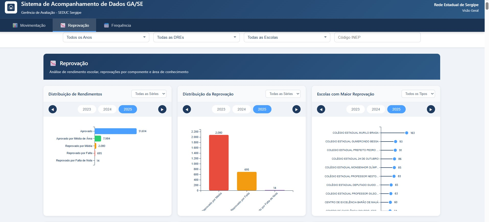
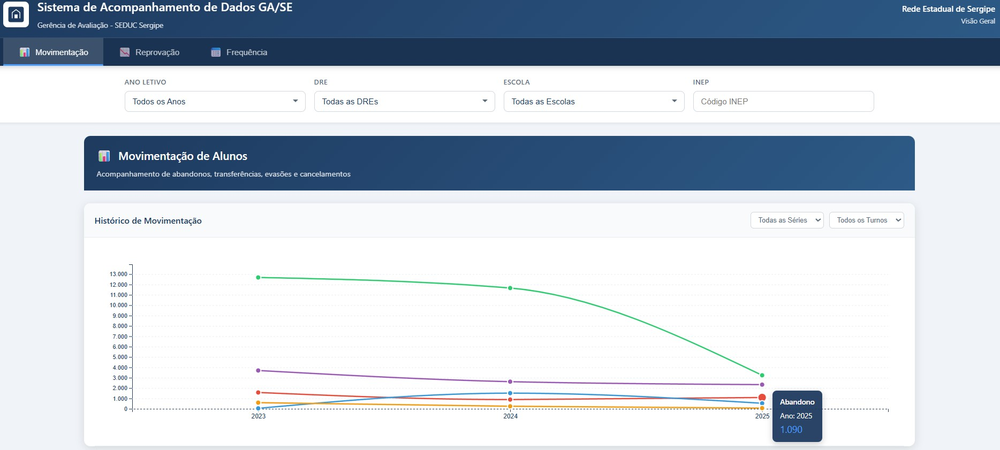
Python · API · Google Apps Script
04 — Sistema de Gestão de Avaliações Diagnósticas
A rede estadual de Sergipe implementou avaliações diagnósticas com a plataforma Plurall em 201 escolas e 10 DREs. O ciclo — agendamento, aplicação, consolidação — exigia um sistema coordenado para gerenciar logística e dar visibilidade em tempo real.
Solução Desenvolvida
Aplicação web em Google Apps Script com arquitetura modular. Autenticação: três perfis — Admin (acesso total), DRE (visão da diretoria) e Escola (agendamento individual). Agendamento: interface para datas e turnos (matutino, vespertino, noturno) para 1ª–3ª série em LP e Matemática. Processamento: upload de dados Plurall e Somos, cruzamento com mapeamento de 221 escolas (Plurall ↔ INEP). Dashboards: agendamento (progresso por DRE) e resultados (participação, desempenho por escola/série/disciplina, tempos médios). Banco em Google Sheets com 7 abas: DePara, Acompanhamento, Resultados_Brutos, Resultados_Processados, Historico_Uploads, Config_Resultados, Lista_Noturno.
O sistema viabilizou a coordenação centralizada do agendamento em 201 escolas, eliminando processos manuais e fornecendo visibilidade em tempo real. Gestores das DREs e da Secretaria puderam monitorar desempenho em LP e Matemática de forma desagregada, subsidiando decisões pedagógicas e o planejamento de ações de reforço escolar.
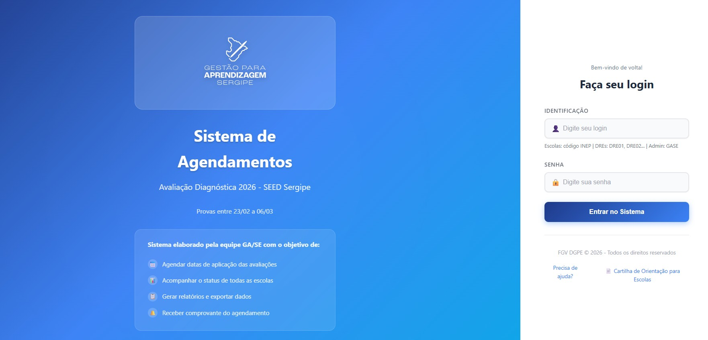
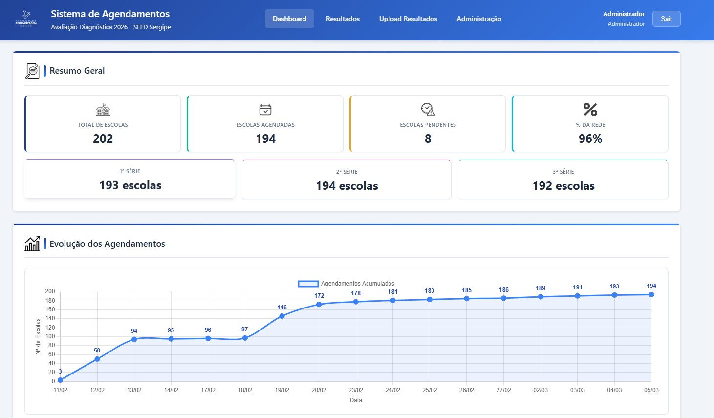
Google Apps Script · Bootstrap · Chart.js · Google Sheets
05 — Painel de Recomposição de Aprendizagens
Joinville implementou programa de recomposição para estudantes com defasagens. A gestão demandava um painel para acompanhar participação, medir progresso nas atividades de recuperação e gerar relatórios acionáveis para gestores escolares.
Solução Desenvolvida
Dashboard web com backend em Google Apps Script: camada DataService.js para operações de dados e Code.js para lógica de negócio. Interface responsiva com login, sidebar, KPIs, busca e filtragem de alunos, diálogos modais para visualizações detalhadas. Script Node.js (preprocessar.js) para parsing de CSVs e preparação via Google APIs. Integração jsPDF e jspdf-autotable para relatórios PDF automatizados com tabelas formatadas, exportáveis por escola. Módulo de acompanhamento de progresso com monitoramento de participação e visualização individual do aluno.
O dashboard forneceu à equipe gestora uma visão integrada do programa de recomposição, viabilizando monitoramento em tempo real da participação e do progresso das atividades. A geração automatizada de relatórios PDF simplificou a comunicação com as equipes escolares e apoiou o acompanhamento individualizado dos alunos.
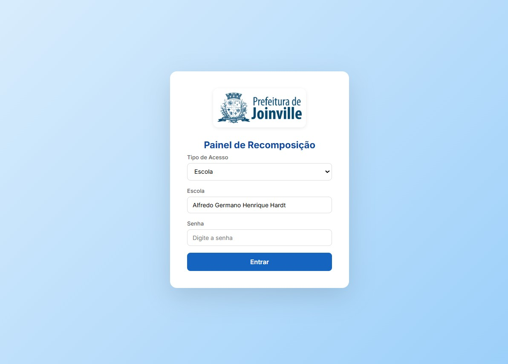
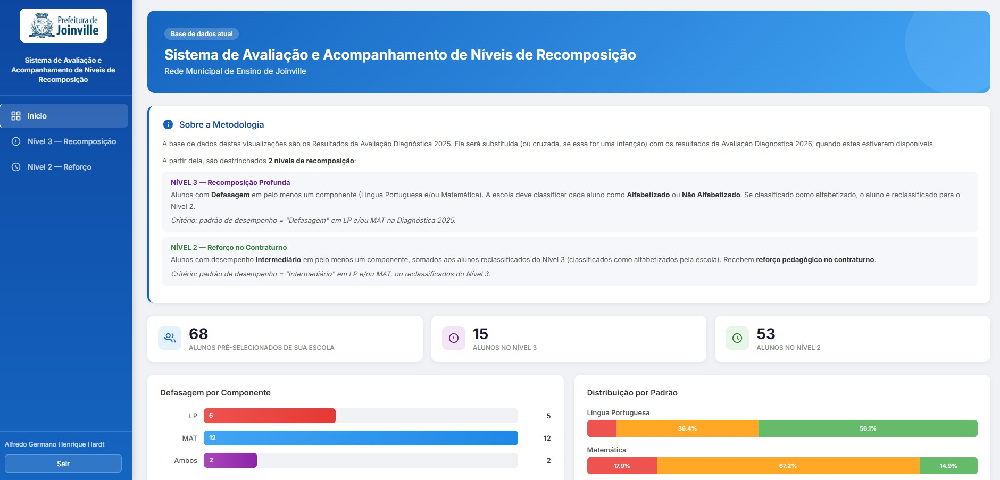
Google Apps Script · Node.js · jsPDF · Google APIs
06 — Sistema de Monitoramento Temporal de Risco
A SED Sergipe gerava relatórios Excel diários de risco por aluno, escola, série e turma. A análise isolada não permitia identificar tendências nem avaliar se as intervenções reduziam o risco ao longo do tempo.
Solução Desenvolvida
Sistema automatizado de análise temporal. Extração: parsing de nomes de arquivos para datas (formatos DD.MM.AAAA e DD_MM). Processamento: leitura e filtragem por risco_reprovacao = "Sim". Agregação longitudinal: contagem por escola (INEP), série, turma e data, construindo base temporal. Resumo: consolidação diária com totais de alunos em risco, escolas afetadas e turmas impactadas. Saídas: base_temporal_detalhada.xlsx (detalhamento) e resumo_temporal.xlsx (consolidado para dashboards).
O sistema transformou relatórios estáticos em ferramenta de análise longitudinal, permitindo à Secretaria acompanhar a evolução do risco ao longo de semanas e meses. Essa visão temporal possibilitou avaliar a efetividade de intervenções pedagógicas e identificar escolas onde o risco se mantinha estável ou crescente — sinalizando necessidade de ações adicionais.
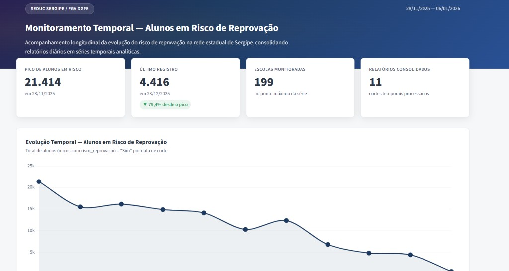
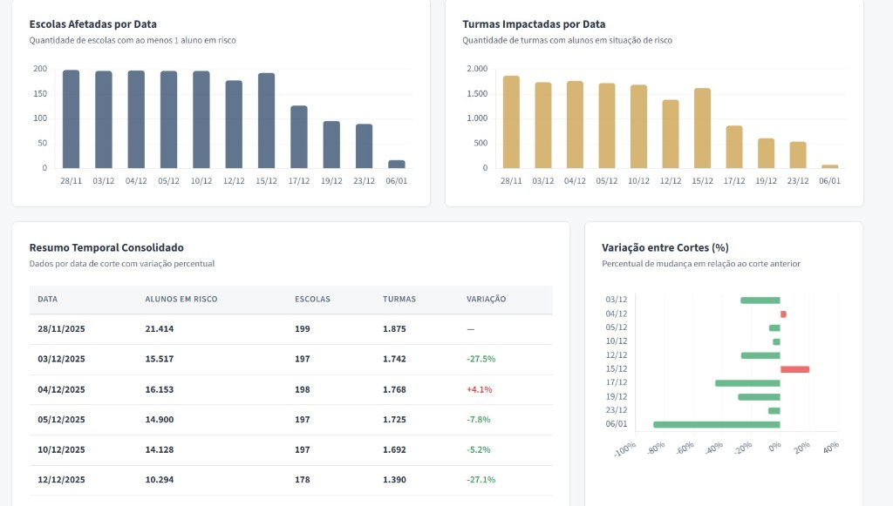
Python · Pandas · Séries Temporais · Excel
07 — Sistema de Priorização de Escolas para o SAEB
A preparação para o SAEB 2025 exigia identificar e priorizar escolas que mais necessitavam de apoio. Com centenas de escolas, uma seleção subjetiva não alocaria eficientemente os recursos limitados.
Solução Desenvolvida
Ferramenta interativa de priorização multicritério. Critérios: indicadores de desempenho, níveis de risco e características das escolas. Análise em Python: script que aplica lógica multicritério e calcula pontuações compostas de prioridade. Visualização: dashboard HTML interativo para navegação nos resultados. Aplicação web: interface em Google Apps Script com sidebar, implantada para uso direto pela equipe gestora. Cenários configuráveis (8 ou 10 escolas/articulador), filtros por DRE e ajuste de pesos (Participação, Rendimento). Guias de instalação e deploy incluídos.
A ferramenta permitiu à Secretaria de Sergipe direcionar objetivamente os esforços de preparação para o SAEB 2025 às escolas com maior necessidade de apoio. O sistema substituiu processos subjetivos de seleção por uma metodologia transparente, baseada em dados e replicável — contribuindo para alocação mais eficiente de recursos pedagógicos e técnicos.
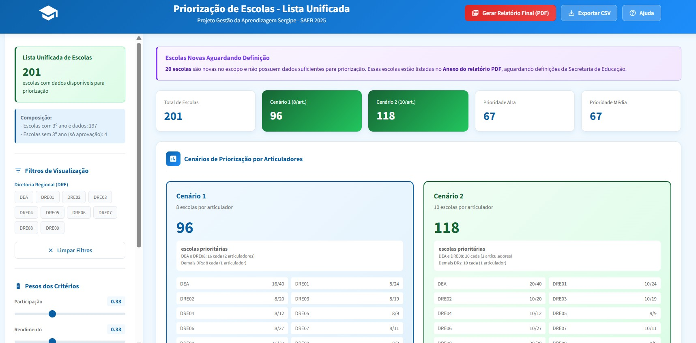
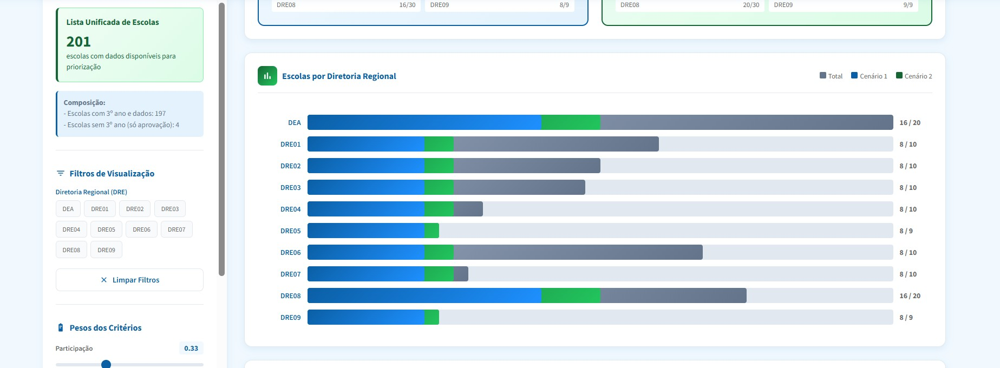
Python · Google Apps Script · HTML · Análise Multicritério
08 — Painel de Indicadores Educacionais — IDEB & Censo
A SED Sergipe necessitava de infraestrutura que consolidasse IDEB e Censo Escolar em painel analítico para análises comparativas entre estados, regiões e séries históricas. Dados de múltiplas fontes, anos e formatos.
Solução Desenvolvida
Repositório integrado e pipeline estruturado. Coleta: séries históricas do IDEB (2022–2024) e microdados do Censo 2023. Padronização: normalização de códigos de UF, etapas de ensino e definições de indicadores. Integração: cruzamento entre IDEB, infraestrutura do Censo (água, energia, esgoto, biblioteca, laboratório, internet, quadra) e Indicadores Compostos de Gestão (ICG) em níveis nacional, regional e estadual. Documentação: técnica completa do pipeline e definições de indicadores para manutenção e replicabilidade.
A base integrada permitiu à equipe de gestão da SED Sergipe realizar análises comparativas do desempenho educacional do estado em relação a outras UFs e às metas nacionais. Os dados alimentaram painéis de monitoramento utilizados em reuniões estratégicas e subsidiaram o planejamento de ações voltadas à melhoria dos indicadores de qualidade da educação básica.
Python · Dados INEP · CSV · Pipeline de Dados
09 — Sistema de Monitoramento Estratégico SED Joinville
A Secretaria Municipal de Educação de Joinville implementou o PEI 2025-2029, estruturado em Objetivos de Impacto, Objetivos Estratégicos, Resultados, OKRs e Atividades em quatro eixos. A gestão demandava um sistema integrado para acompanhar metas, OKRs e indicadores em dashboards acessíveis a diferentes perfis.
Solução Desenvolvida
Sistema web em Google Apps Script com autenticação (Secretário, Planejamento, Gerência), modelagem PEI (22 resultados por diretoria), módulo de indicadores com metas 2026, importação automatizada da planilha de acompanhamento (triggers diários) e dashboards: resumo de atividades, execução por OE, Mandala Estratégica (D3.js) e Painel de Indicadores (77 indicadores, coleta por mês, periodicidade, polaridade).
O sistema centralizou o acompanhamento do PEI 2025-2029, permitindo ao Secretário e às Gerências acompanhar metas, OKRs e indicadores em tempo real.
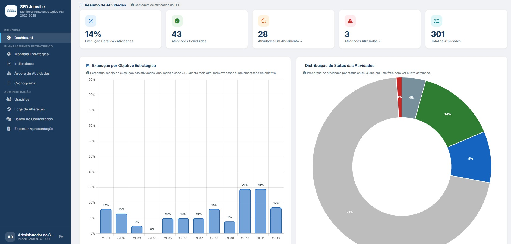
Google Apps Script · Chart.js · D3.js · Google Sheets